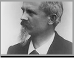

汽车百科

发展史
关键词
喷气式
1680年，英国著名科学家牛顿设想了喷气式汽车的方案，利用喷管喷射蒸汽来推动汽车，但未能制成实物。
蒸汽动力
1769年，法国人N·J·居纽制造了用煤气燃烧产生蒸汽驱动的三轮汽车。但是这种车的时速仅4公里，而且每15分钟就要停车向锅炉加煤，非常麻烦。后来车在一次行进中撞到砖墙上，碰得支离破碎。
1879年，德国工程师卡尔·本茨(Karl Benz)，首次试验成功一台二冲程试验性发动机。1883年10月，他创立了“本茨公司和莱茵煤气发动机厂”，1885年，他在曼海姆制成了第一辆本茨专利机动车，该车为三轮汽车，采用一台二冲程单缸0.9马力的汽油机，此车具备了现代汽车的一些基本特点，如火花点火、水冷循环、钢管车架、钢板弹簧悬架、后轮驱动前轮转向和制动手把等。1886年的1月29日，德国工程师卡尔·本茨为其机动车申请了专利。同年11月，卡尔·本茨的三轮机动车获得了德意志专利权（专利号：37435a）。这就是公认的世界上第一辆现代汽车。由于上述原因，人们一般都把1886年作为汽车元年，也有些学者把卡尔·本茨制成第一辆三轮汽车之年(1885年)，视为汽车诞生年。
电话:0543-5086002 招生咨询：0543-5082257 5082326 地址: 山东滨州黄河12路919号 邮箱:256603
Copyright © 2011. BZPT.EDUCN. All Rights Reserved. 鲁ICP备05018600 滨公备:0601005